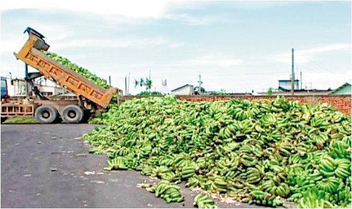
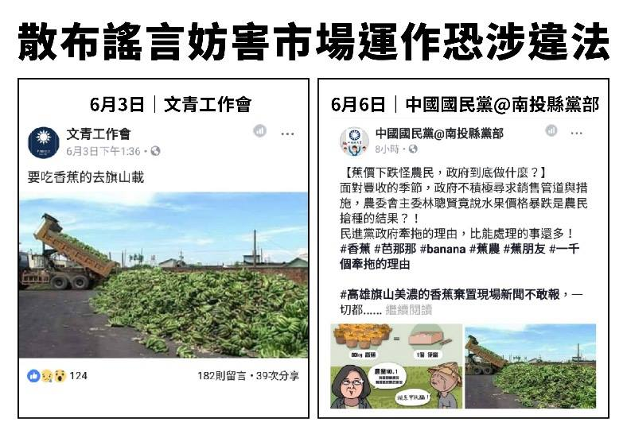
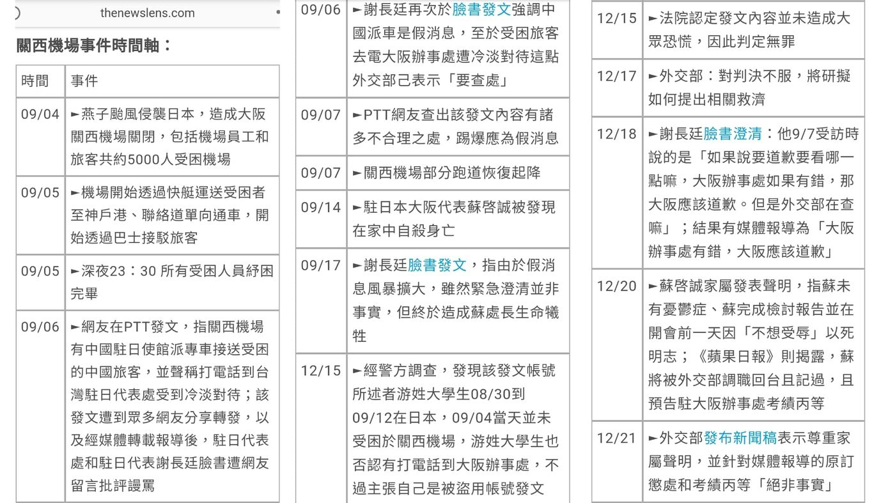

假新聞（Fake News）是隨著網路興起後，產生的新詞，用來指「捏造新聞」或「沒有事實根據的新聞」
假新聞的目的有很多，但多數是為了誤導大眾，以帶來政治、經濟、市場、或心理得到成就感和利益
通常假新聞有這些特徵
- 釣魚式標題
- 垃圾內容
- 宣傳某件事物
- 誤導性的標題
- 諷刺性內容
- 有偏見的新聞


1 / 3
假新聞報導香蕉被傾倒，蕉價雪上加霜
2019年6月初網路瘋傳一張一卡車香蕉被傾倒在地上的照片，並配上圖說「高雄旗山美濃的香蕉棄置現場新聞不敢報，一切都新聞封鎖。」
對此，農委會副主委陳吉仲即時召開記者會澄清，這是假消息，照片拍攝時間為2007年，由公視「我們的島」拍攝，並非今年狀況，且強調這已影響香蕉價格、農民收入，會進一步提告。
陳吉仲表示，現在當地沒有這樣傾倒香蕉狀況，這是有心人士傳遞假消息，而假消息傳播可能影響到香蕉產地價格，讓交易市場產生負面影響，跟現在農委會大力拉回蕉價的措施有抵消效應。
「中國國民黨＠南投縣黨部」及「文青工作會」也在臉書上貼出該張不實照片。對此，陳吉仲批，相關黨部單位這樣散播不實謠言，造成香蕉價格受損。


▴上圖為被引用來製造假新聞的圖片。
▴不實圖片的散佈。
2 / 3
媒體報導帛琉太平洋航空無懼中國的打壓而停飛
媒體有關帛琉太平洋航空（Palau Pacific Airways）宣布在2018年8月底停飛之初期報導，許多新聞媒體將其指涉為政治因素，強調是因無懼中國大陸的政治打壓，如標題為「堅不與我斷交還無懼旅遊禁令 帛琉航空停飛中國」、「無懼陸恐嚇堅持不與台灣斷交 帛琉航空停飛大陸」、「無懼中國恫嚇！堅不與台斷交 帛琉航空宣布停飛中國」，「這邦交國好有guts！帛琉太平洋航空宣布停飛中國」等的報導，然而事實並非如此。
國內媒體的最初報導，主要根據的外媒為帛琉當地報紙《島嶼時報》。但《島嶼時報》的有關報導指出，帛琉太平洋航空所屬的百悅集團向帛琉國會提交了一份聲明表示，該公司將無限期停飛(目前僅經營帛琉－香港航線)，原因是航空公司間的競爭及中國遊客劇減，關於航空公司的競爭，聲明中稱許多僅在旅遊旺季經營的航空公司採取削價競爭，已使公司營運面臨難以維持的狀態。
中國遊客方面，雖然降低500美元的費用，但一月到七月的旅客只有1萬4千人。此外，中國方已將帛琉視為非法旅遊地點（排除帛琉於中國人民的旅遊名單之外），若旅行社違反該政策將會受罰。帛琉太平洋航空負責人邱宏照曾接受《風傳媒》專訪，他表示，「我們跟政治也扯不上邊，帛琉太平洋航空結束營業，百分之百是商業考量」。此一專訪亦被百悅集團的臉書粉專於報導刊出的同日予以轉載，以示澄清。 帛琉太平洋航空決定停飛的商業考量也被帛琉官方所證實。帛琉駐台大使歐克麗（Dilmei L. Olkeriil）日前以電子郵件接受中央社訪問時明言：「就她了解，帛琉太平洋航空因為遊客數量低而決定暫停飛往中國的航線。」
媒體有關此事件的初期報導，在標題上多連結到無懼中國的政治打壓，與其所依據的外媒消息來源並不一致，明顯題文不符，是會誤導民眾的假新聞。且報導內容也出現脈絡錯置的現象，該航空公司停飛原因雖與北京政府打壓帛琉旅遊業有關，但相關報導的內容皆無具體資料足以佐證商業考慮以外的停飛理由。
國內媒體的最初報導，主要根據的外媒為帛琉當地報紙《島嶼時報》。但《島嶼時報》的有關報導指出，帛琉太平洋航空所屬的百悅集團向帛琉國會提交了一份聲明表示，該公司將無限期停飛(目前僅經營帛琉－香港航線)，原因是航空公司間的競爭及中國遊客劇減，關於航空公司的競爭，聲明中稱許多僅在旅遊旺季經營的航空公司採取削價競爭，已使公司營運面臨難以維持的狀態。
中國遊客方面，雖然降低500美元的費用，但一月到七月的旅客只有1萬4千人。此外，中國方已將帛琉視為非法旅遊地點（排除帛琉於中國人民的旅遊名單之外），若旅行社違反該政策將會受罰。帛琉太平洋航空負責人邱宏照曾接受《風傳媒》專訪，他表示，「我們跟政治也扯不上邊，帛琉太平洋航空結束營業，百分之百是商業考量」。此一專訪亦被百悅集團的臉書粉專於報導刊出的同日予以轉載，以示澄清。 帛琉太平洋航空決定停飛的商業考量也被帛琉官方所證實。帛琉駐台大使歐克麗（Dilmei L. Olkeriil）日前以電子郵件接受中央社訪問時明言：「就她了解，帛琉太平洋航空因為遊客數量低而決定暫停飛往中國的航線。」
媒體有關此事件的初期報導，在標題上多連結到無懼中國的政治打壓，與其所依據的外媒消息來源並不一致，明顯題文不符，是會誤導民眾的假新聞。且報導內容也出現脈絡錯置的現象，該航空公司停飛原因雖與北京政府打壓帛琉旅遊業有關，但相關報導的內容皆無具體資料足以佐證商業考慮以外的停飛理由。
資料來源 https://tfc-taiwan.org.tw/articles/79（台灣事實查核中心）
3 / 3
關西機場事件
2018年9月4日燕子颱風肆虐日本、重創關西機場，機場因為淹水、停電、和油輪撞斷機場聯絡橋等原因關閉，數千旅客受困。台灣多家媒體引述中國網路媒體報導指出，「中國駐大阪總領事館派15輛巴士前往關西機場，營救750名受困中國旅客……台灣旅客……覺得自己是中國人就可以上車」。
接著在PPT上爆出一則發文，自稱是受困機場的台灣人，指出機場有中國駐日使館派專車接送，聲稱打電話到臺灣駐日代表處受到冷淡對待。此貼文被瘋狂轉發後，造成網友大肆批評謾罵台灣駐日代表處的處理，間接造成台灣駐日本大阪代表蘇啟文自殺身亡。
台灣事實查核中心在消息傳開後即積極聯繫日本事實查核推廣協會FIJ和日本關西機場，擬定事件中的幾項爭議點，透過FIJ事務局長楊井人文先生協助將問題求證於日本關西機場發言人，得到關西機場的正式回覆。
回覆表示事發當時中國駐大阪領事館確實向關西機場提出想要派巴士一事，但關西機場拒絕，並說明關西機場會安排巴士送所有旅客（不分國籍）到中轉站。當時中國的南方航空公司讓中國旅客聚集在同一輛車，但中國旅客人數千人以上，所以關西機場方將載中國旅客的巴士中轉站指定為泉佐野市內購物中心的停車場，並告訴中國駐大阪領事館，之後中國駐大阪領事館在中轉站準備巴士將中國旅客移轉至大阪市內，而中國人搭的巴士（關西機場安排、送旅客到中轉站）上，也包含幾名臺灣人。

中國駐日領事館派車前往機場一事為誤會，事後也查出PPT發文為造謠，發文者當日並未受困機場，一切都是假新聞，和大量網友、媒體轉發渲染。
中國駐日領事館派車前往機場一事為誤會，事後也查出PPT發文為造謠，發文者當日並未受困機場，一切都是假新聞，和大量網友、媒體轉發渲染。
▴關西機場事件時間軸。（來源：The News Lens）